Токио · Омотэсандо · ресторан
l'élan на Омотэсандо: французская кухня шефа, который знает своих фермеров
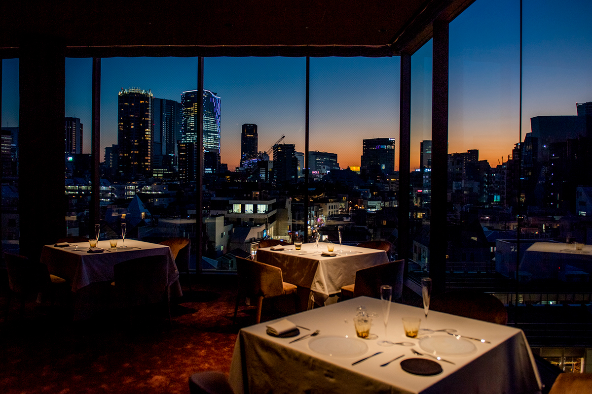
Французский ресторан l'élan стоит на Омотэсандо, на четвёртом этаже здания GYRE. Шеф Рёма Сида строит меню вокруг продуктов от фермеров, с которыми знаком лично, держит пчёл на крыше и учит детей готовить.
Ресторан
Просто вкусно
Омотэсандо это токийская улица, вдоль которой тянется зелёная аллея дзельков. На ней стоит торговое здание GYRE, а на его четвёртом этаже работает французский ресторан l'élan. Владелец и шеф Рёма Сида учился в известных домах высокой кухни: в токийском L'Osier и во французском Troisgros.
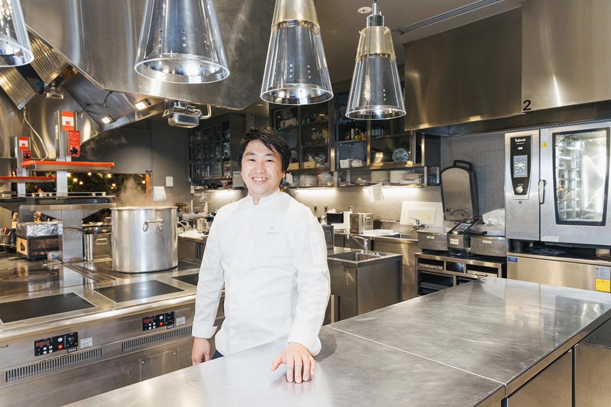
В основе его блюд классическая французская техника, а сверху много собственных идей. Тарелки красивы, как картины, вкус тонкий и многослойный, но первое, что хочется сказать, очень простое: «Вкусно».
Продукты в основном японские. За рыбой и морепродуктами шеф каждое утро сам ездит на рынок Тоёсу и выбирает их своими глазами. Овощи приходят с органической фермы на острове Нотодзима в префектуре Исикава, где начинают с подготовки почвы. Цитрусовые везут напрямую из городка Хидакагава в префектуре Вакаяма: там их выращивают с минимумом пестицидов, пользуясь щедрой природой. Шеф подбирает продукты без компромиссов и всегда по сезону.
«Мне важно, чтобы фермер и повар были на равных. Поэтому я стараюсь много общаться с производителями и даже о вкусе продуктов рассказываю им сам, по телефону. Все, с кем я работаю, относятся к своему делу с собственной философией, и понимать их взгляды для меня тоже учёба. Я беру их продукты круглый год, и так на тарелке получаются четыре времени года»
шеф Рёма Сида
Поездки
Из поля на тарелку
Шеф объезжает фермы, сакэварни и животноводческие хозяйства по всей стране. Бывает, что он выходит в поле и помогает выращивать и собирать урожай.
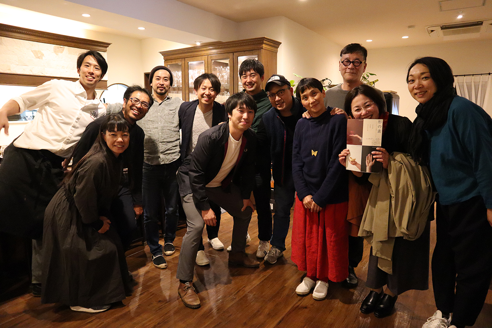
«Так я могу перенести в блюдо то, что видел своими глазами, и тот край, где вырос продукт. Многие тарелки рождаются именно из продукта»
шеф Рёма Сида
В 2021 году шеф запустил проект Atelier du miel и занялся пчеловодством. Ульи стоят на крыше здания, а мёд пчёлы собирают с разных цветов, в том числе в лесу у святилища Мэйдзи. Хлеб в ресторане пекут сами и подают только что из печи, кофе обжаривают тоже сами. Шеф говорит об этом как о чём-то само собой разумеющемся, но внимание к мелочам здесь видно во всём.
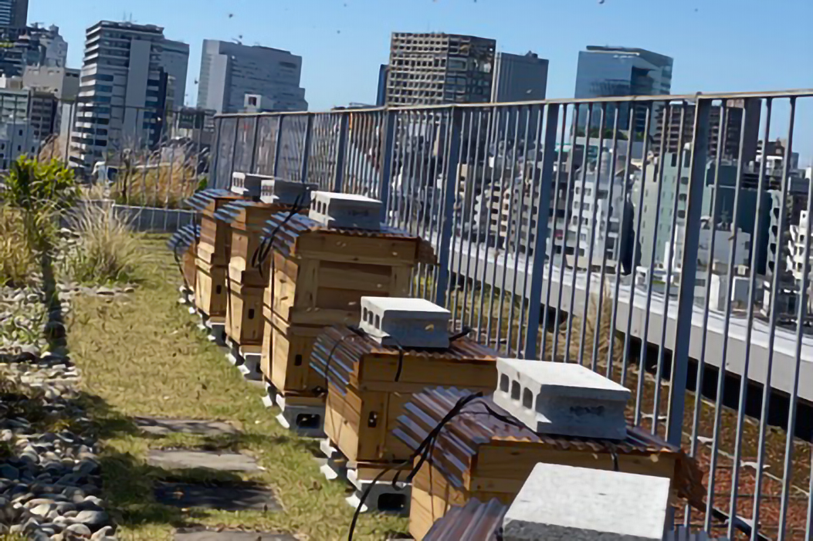
«Я родился и вырос в Токио и ресторан открыл тоже в Токио. Сюда свозят продукты со всей страны, поэтому выбирать из них лучшее для меня естественно. Каждое блюдо создаёт не только мастерство повара. Наша задача ещё и передать гостям мысли всех людей, которые стоят за продуктом»
шеф Рёма Сида
Ужин
Классика с игрой
Представление начинается в тот момент, когда гость открывает большую деревянную дверь. Стены из глины, дерево в отделке, за окнами яркие огни ночного города. На столах белые скатерти и серебряные приборы. Шеф Сида ценит классику, и её сила чувствуется во всём, но лучше всего она видна в блюдах.
Ужин открывает закуска-амюз: консоме, в котором собран вкус обрезков овощей. От него до выпечки на десерт каждая тарелка выглядит современно и ярко. За этой красотой стоят точная работа с огнём, глубокие соусы, то есть подлинная французская техника, и продукты от японских производителей, которым шеф доверяет.
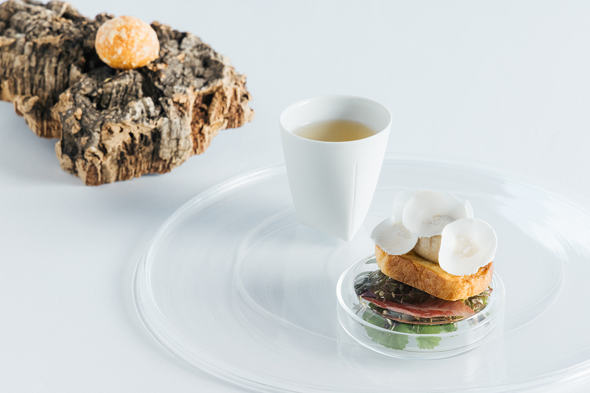
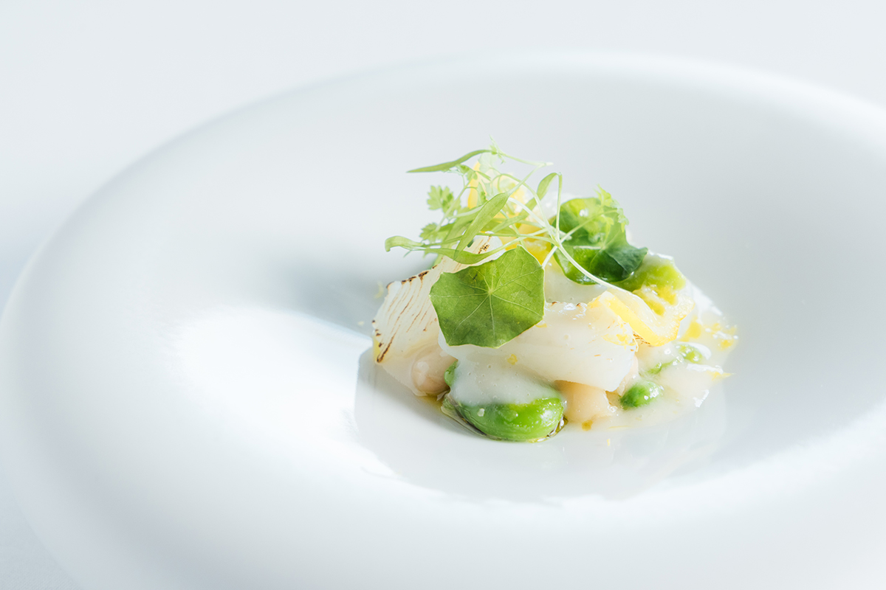
«Разговор с фермерами, французская техника, выбор посуды, хороший зал, тёплый приём: заботиться обо всём, из чего состоит l'élan, для нас само собой разумеется. Хочу, чтобы гости уходили с мыслью: в l'élan было весело, и чтобы здесь можно было дать волю воображению. Для этого мы хотим быть рестораном, который будут любить долго»
шеф Рёма Сида
Рыбу здесь жарят так, что кожа хрустит, а мясо остаётся сочным. Кинки, красного морского окуня, подают с супом из рыбы и овощей, который наливают в тарелку из чугунного чайника, чтобы есть его горячим.
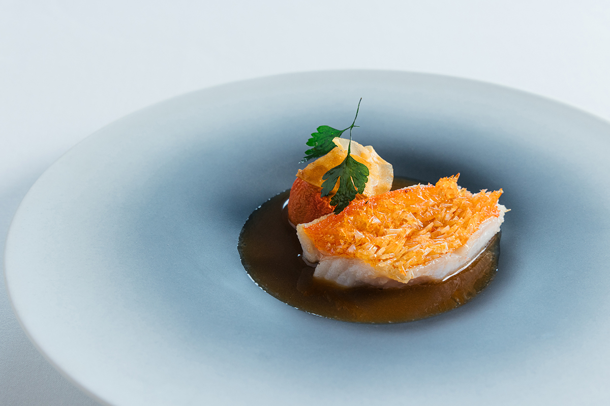
Свёклу с той же фермы на Нотодзиме запекают в соляной корке прямо в эмалированной кастрюле Staub. Корку разбивают за столом, и под ней оказывается яркий корнеплод, а пряная смесь дукка по рецепту ресторана подчёркивает его землистую сладость. Утиную грудку из Киото, от уток, которых кормили чёрной смородиной, жарят так, чтобы сохранить сок, щедро кладут сверху чёрный трюфель и подают с соусом из дикого винограда с Хоккайдо и сладким пюре из корнеплодов.
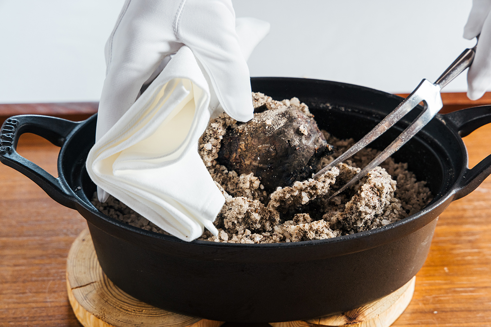
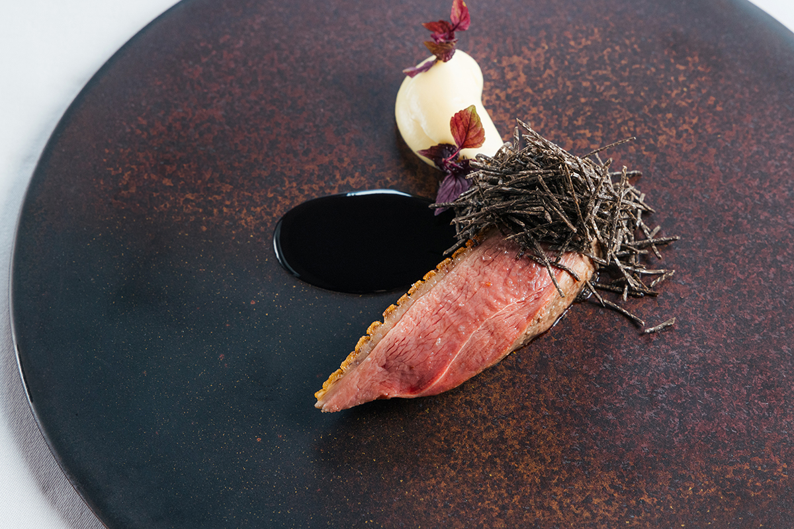
Финал
Сыр, коктейль и кофе
Сыров в ресторане обычно около двадцати: с белой и голубой плесенью, мытой коркой, козьи, твёрдые и полутвёрдые, есть и сыры с Хоккайдо. К ним подают мёд с крыши GYRE.
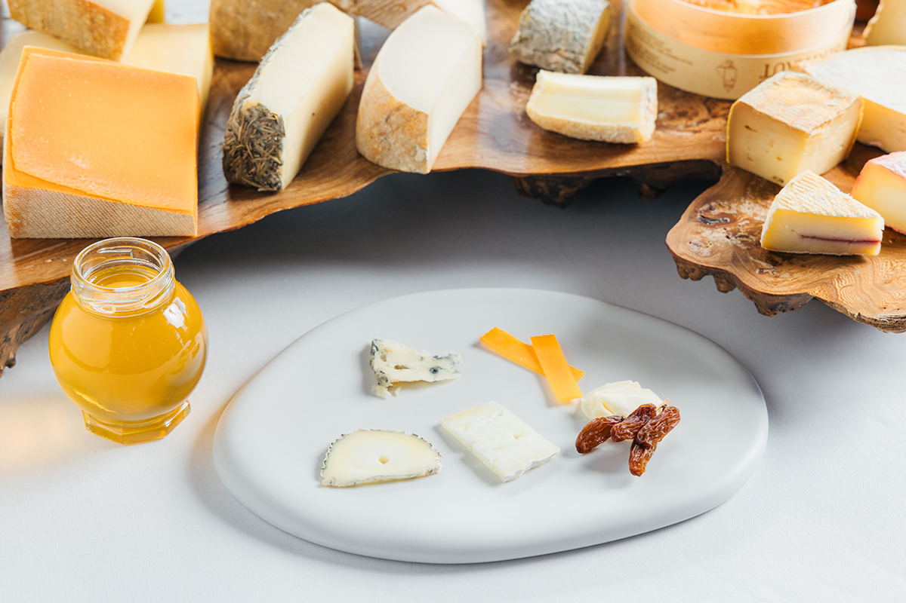
Перед десертом гостям подают коктейль, и шейкер встряхивают прямо на глазах у гостя. В день съёмки это был «Александр», мягкий и в меру сладкий. К блюдам можно заказать и винное сопровождение. После десерта можно выбрать кофе собственной обжарки, к нему домашнюю выпечку. Этот кофе подают и в кафе-баре uni на том же этаже, его тоже ведёт шеф Сида.
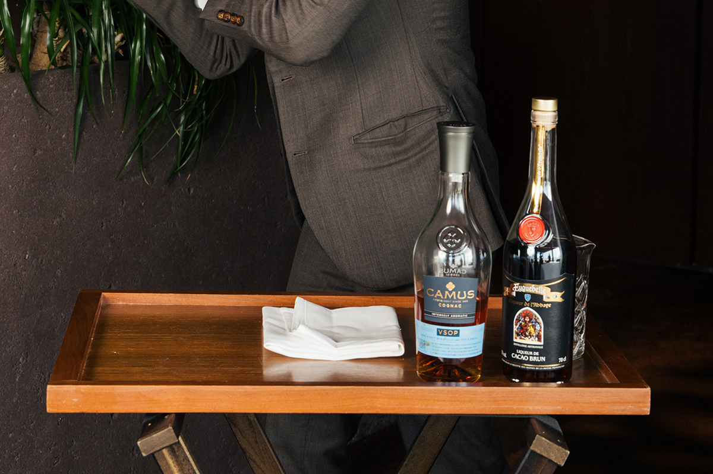
Дети
Уроки на кухне ресторана
Шеф много занимается и воспитанием вкуса у детей. Он родился и вырос в токийском районе Сибуя, здесь же открыл ресторан и хочет быть полезным своему району. Поэтому он приглашает детей в ресторан и проводит для них кулинарные уроки, например учит разделывать рыбу.
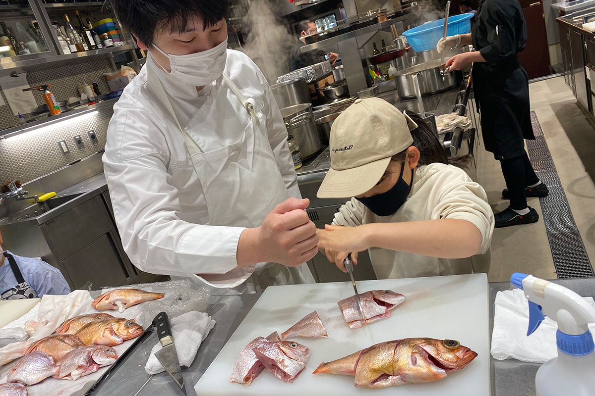
L'élan по-французски значит «взлёт». Через свои блюда ресторан помогает взлететь и мыслям фермеров, и мыслям гостей.
l'élan
- Адрес
- Токио, Сибуя, Дзингумаэ, 5-10-1, GYRE, 4-й этаж
- Телефон
- +81 3-6803-8670
- Часы работы
- 18:00–20:30 (последний вход)
- Выходные
- воскресенье и понедельник (если понедельник праздничный, понедельник и вторник)
- Цены / Вход
- курс 24 200 иен (с налогом, без платы за обслуживание)
- Сайт
- lelan.jp
Фото: Майко Фукуи.